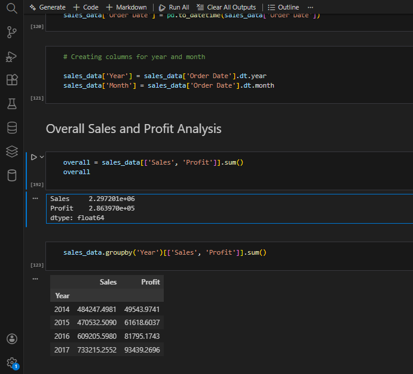
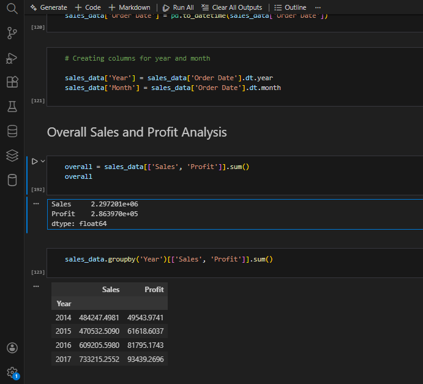
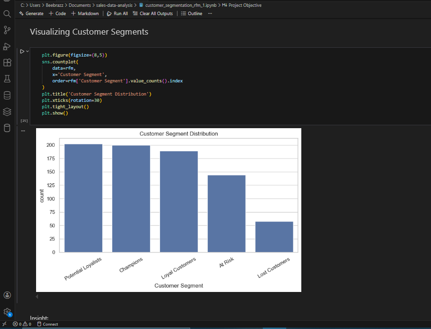
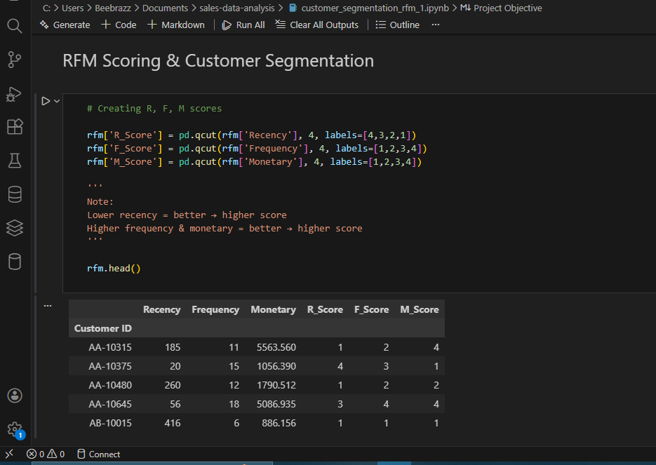
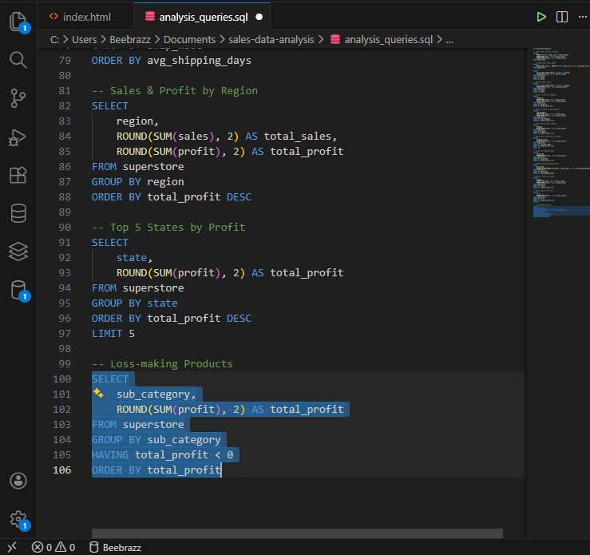
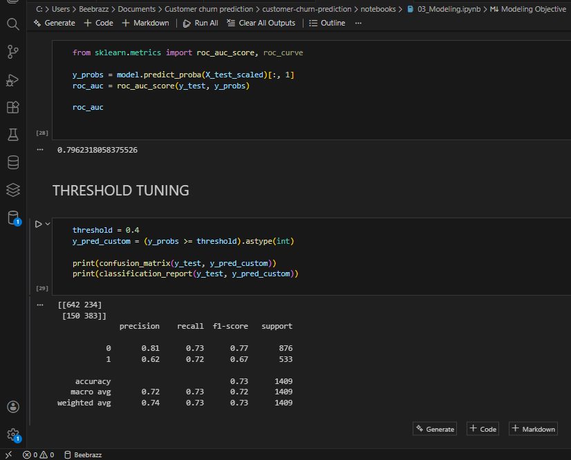
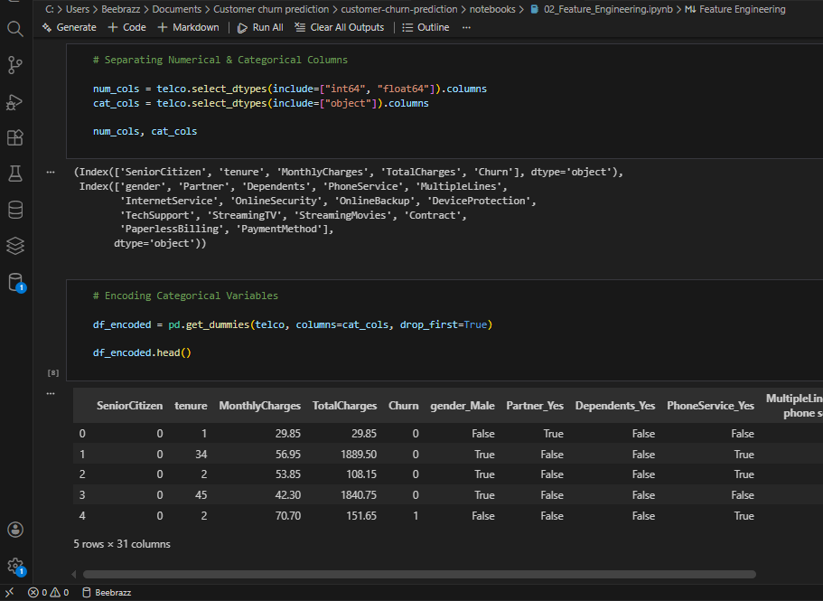

Projects
Sales Performance Analysis (Python)
Analyzed 10,000+ sales transactions using Python to evaluate revenue trends, profitability, and product performance. Identified top-performing categories and underperforming regions to support data-driven business decisions.
- Cleaned and analyzed large sales datasets using Pandas and NumPy
- Created visualizations to track monthly sales and profit trends
- Generated insights to improve revenue forecasting and inventory planning
Tools: Python, Pandas, Matplotlib, Seaborn
 

Customer Segmentation using RFM Analysis
Performed customer segmentation using Recency, Frequency, and Monetary (RFM) analysis to identify high-value and at-risk customers. Enabled targeted marketing and retention strategies based on customer behavior.
- Calculated RFM metrics from transactional data
- Segmented customers into meaningful behavioral groups
- Visualized customer segments to support marketing decisions
Tools: Python, Pandas, Data Visualization
 SQL Sales Analysis (MySQL)
Conducted in-depth sales analysis using SQL to extract key performance indicators such as total sales, profit, and average order value. Analyzed monthly trends and category-level performance using complex queries.
- Wrote advanced SQL queries using JOINs, GROUP BY, subqueries, and date functions
- Calculated KPIs including total sales, profit, and AOV
- Identified high-profit categories and seasonal trends
Tools: MySQL

Customer Churn Prediction
Built a machine learning model to predict customer churn using historical customer data. Identified key factors influencing customer retention and churn risk.
- Performed data cleaning, feature engineering, and exploratory analysis
- Trained and evaluated machine learning models to predict churn probability
- Highlighted actionable factors affecting customer retention
Tools: Python, Pandas, Scikit-learn
 